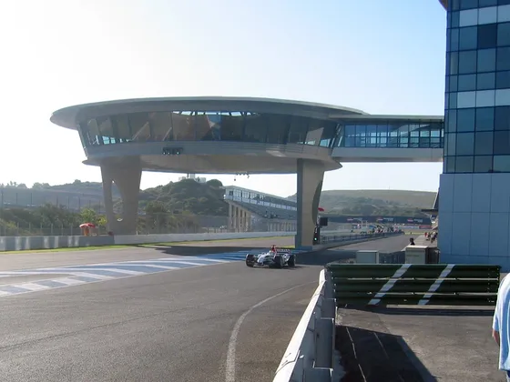

Circuitos de carreras en Jerez
La ciudad de Jerez es conocida en todo el mundo por su pasión por los deportes de motor, especialmente las carreras de motos y coches. Jerez cuenta con dos circuitos de carreras importantes: el Circuito de Jerez-Ángel Nieto y el Circuito Ascari.
Circuito de Jerez-Ángel Nieto
El circuito de Jerez ha sido testigo de muchos momentos emocionantes en la historia de las carreras de motos y coches, desde victorias impresionantes hasta momentos de tragedia. Aquí hay algunas curiosidades y datos interesantes sobre el circuito:
- En 1990, el piloto estadounidense Kevin Schwantz logró una victoria épica en el Gran Premio de España de Motociclismo, superando a su rival Wayne Rainey en la última curva del circuito. Este momento es recordado como una de las mayores victorias en la historia del circuito de Jerez.
- En 1997, el piloto alemán Michael Schumacher ganó el Gran Premio de España de Fórmula 1 en el Circuito de Jerez, asegurando así su segundo título mundial.
- En 2005, el Gran Premio de España de Motociclismo en Jerez fue el primer Gran Premio en la historia en el que todos los pilotos clasificados en las primeras cuatro posiciones fueron españoles. Los pilotos Dani Pedrosa, Sete Gibernau, Carlos Checa y Toni Elías lograron un resultado histórico para el motociclismo español.
- En 2018, el circuito de Jerez cambió su nombre oficial a Circuito de Jerez-Ángel Nieto, en homenaje al legendario piloto español de motociclismo Ángel Nieto, quien falleció en 2017.
En conclusión, el Circuito de Jerez-Ángel Nieto es uno de los circuitos más importantes de España, con 4,4 km de longitud y numerosos momentos emocionantes en su historia, incluyendo la victoria de Michael Schumacher en 1997 y el cambio de nombre en 2018 en honor a Ángel Nieto.
